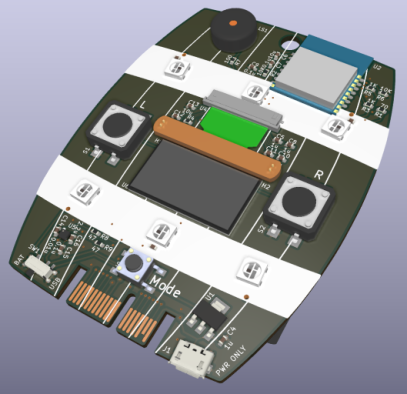
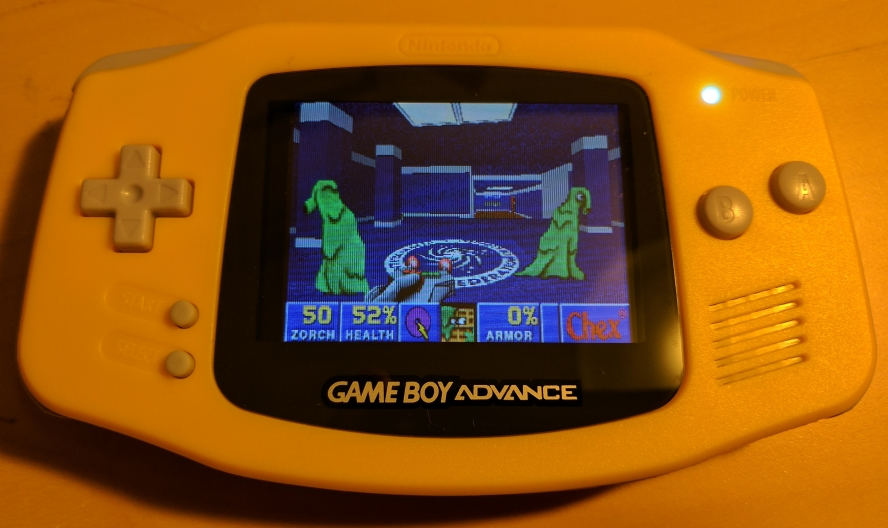
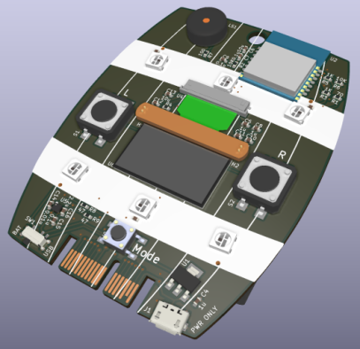
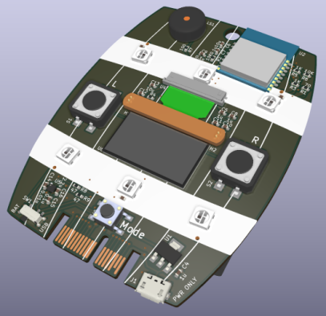

Super Magfest is a four day-long event dedicated to the appreciation of video game music, gaming of all types, and the gaming community.
The Swadge, short for swag badge, is a circuit board badge which staff (red boards) and supporters (black boards) were given, and everyone else could buy at Super Magfest (blue boards). The official product page is over this way.
The 2019 Swadge has six modes:
Colorchord, music reactive LEDs
Reflector, a head-to-head reflex game
Six Sided Die Roller
LED Animations, unlocked by winning at Reflector
Flashlight and strobe
Instrument tuner
For the 2019 Swadge, I was the lead firmware developer. I wrote the mode framework, Reflector, D6, the LED Animation framework, and Flashlight. I also coordinated the other contributions. CNLohr wrote Colorchord, adangert designed the LED animations, and thaeli wrote the tuner.
The entire project is open source, and you can find it at GitHub below:
We manufactured 2700 Swadges and had a nearly 0% failure rate.
Here's a short preview of the 2019 Swadge doing its thing:
Here's a longer video describing all the 2019 Swadge features and how to use them:
Here's the longest video, a panel at Magfest about the design and creation of the 2019 Swadge. The slides are available online. My bit about the firmware is at 36:30 if you want to skip ahead:
It's another project for Super Magfest! This year the theme was inspired by Donkey Kong, so we made barrels (green for staff and merch, black for supporters) and a banana (yellow, of course, for crazy-tier supporters). The official product page is over this way.
The 2020 Swadge has seven modes:
Tiltrads, a tilt controlled Tetris-like game
Snake, just like you remember on old Nokia phones
Joust, a multiplayer dueling game inspired by JS Joust
Maze, a tilt controlled labyrinth
Gallery, a place to view GIFs and listen to music
Colorshake, motion-reactive LEDs
Music, a tilt-controlled single-voice synthesizer with pitch, tempo, scale, and rhythm control
The entire project is open source, and you can find it in these GitHub repos: (Hardware)(Firmware)
We made some 3D renders this year with KiCad: 
I was on a panel about the design and creation of the 2020 Swadge, which you can view in its entirety below. The slides are available online too.
GBA Zero
I made a circuit board and jammed a Raspberry Pi Zero into a Gameboy Advance shell.

The Github page has a writeup of of the project, which I'm not going to copy here.

 
{kind=link}
{kind=link}